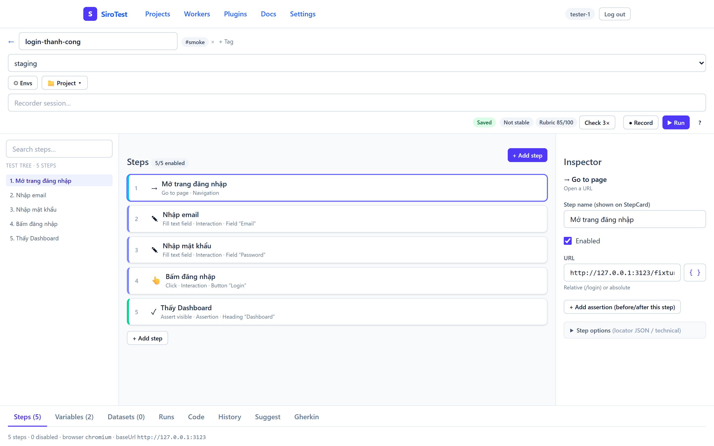
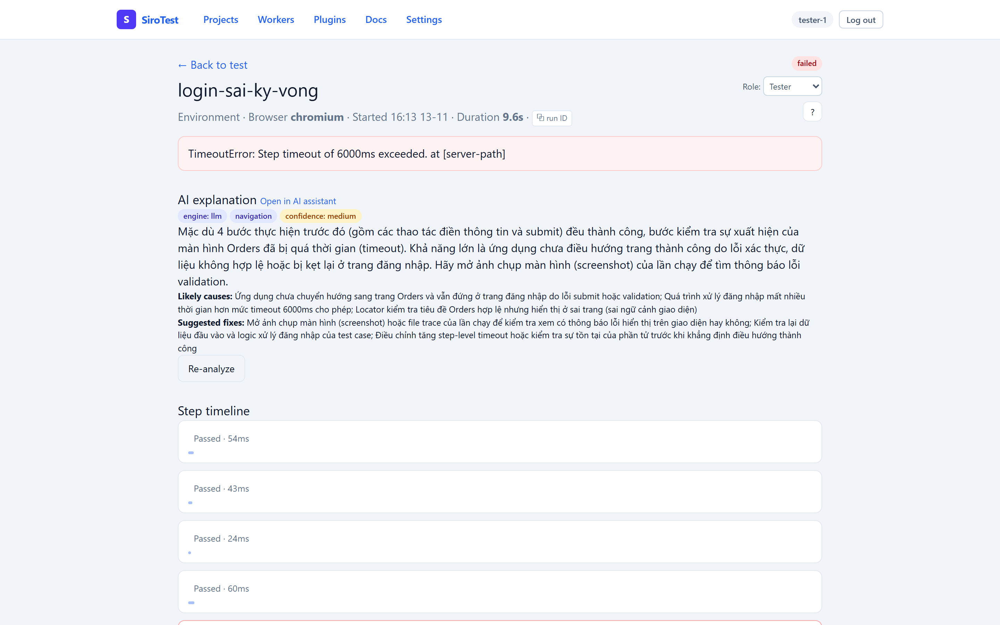
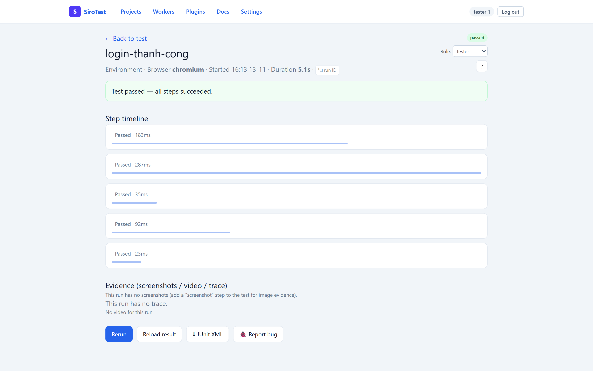
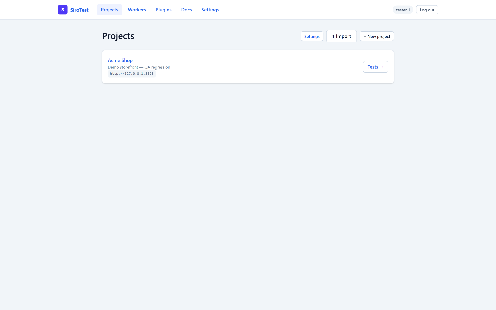
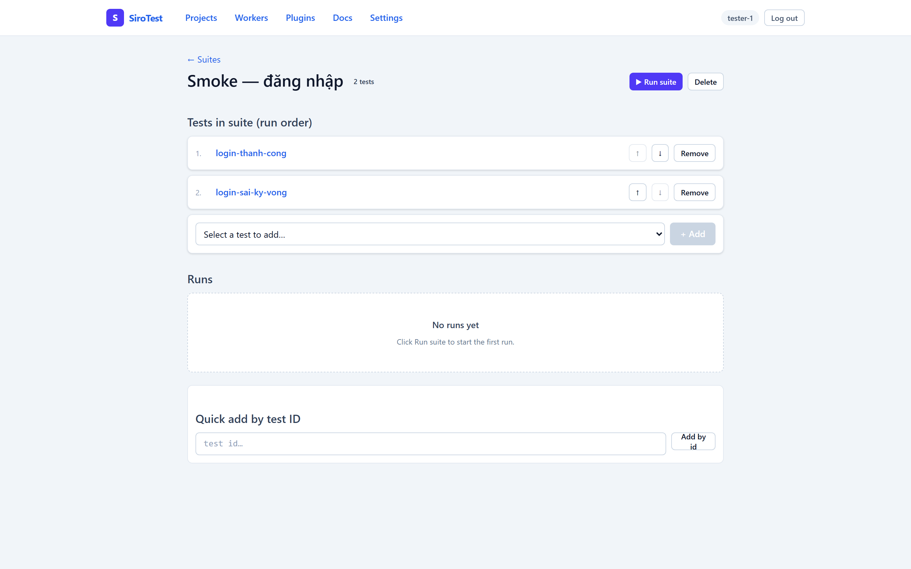

Low-code E2E testing your testers will actually use: executable specs, honest AI, full audit trails, standard Playwright export. Your data never leaves the company.
Kiểm thử E2E low-code mà tester thật sự dùng: đặc tả chạy được, AI trung thực, audit đầy đủ, xuất chuẩn Playwright. Dữ liệu không ra khỏi công ty.
テスターが本当に使うローコードE2Eテスト：実行可能な仕様書、正直なAI、完全な監査証跡、Playwright標準出力。データは社外に出ません。
Click any screenshot to zoom
Bấm vào ảnh để xem lớn
画像をクリックで拡大





Click the real browser; steps appear with ranked locators (primary + alternatives). P0 runs primary only — never silent healing.
Thao tác trình duyệt thật, steps tự hiện kèm locator xếp hạng. Bản P0 chỉ chạy primary — không bao giờ tự chữa lén.
実ブラウザの操作を自動記録。P0はプライマリロケータのみ実行 — 暗黙の自己修復なし。
Vietnamese Cho rằng/Khi/Thì scenarios parse into runnable steps. Spec changes become test changes.
Kịch bản Cho rằng/Khi/Thì parse thành steps chạy được. Đổi spec là có test mới.
ベトナム語の仕様書が実行可能なテストに変換。仕様変更がそのままテスト更新に。
Failure explanations, step drafting, recording cleanup, smart naming — every answer badged rules or llm. Bring your own key or gateway; secrets redacted pre-LLM.
Giải thích lỗi, sinh steps, dọn bản ghi, đặt tên — câu nào cũng gắn nhãn rules/llm. Dùng key/gateway riêng; secret che trước khi gửi.
失敗解説・生成・命名支援 — 回答には必ず出所を表示。 secrets は送信前にマスク。
Who created, edited, ran or approved what, when — append-only. Even project deletion leaves an orphan trace.
Ai tạo/sửa/chạy/duyệt cái gì lúc nào — chỉ ghi thêm, không xóa. Xóa cả project vẫn còn dấu vết.
作成・編集・実行・承認を完全記録。プロジェクト削除時も証跡が残ります。
One click exports standard Playwright specs + JUnit. File run failures to Jira/Backlog/Slack/Lark. Leave the tool, keep every test.
1 click xuất Playwright chuẩn + JUnit; bắn bug sang Jira/Backlog/Slack/Lark. Bỏ tool vẫn giữ toàn bộ test.
ワンクリックで標準出力＋課題管理連携。ツールをやめても資産は残ります。
One host, SQLite single-file backup, no per-seat fees. Remote teammates join over Tailscale; scheduled runs + failure alerts included.
1 máy chủ, backup 1 file, không phí đầu người. Người ở xa vào qua Tailscale; chạy hẹn giờ + báo fail đầy đủ.
単一ホスト・単一ファイルバックアップ・人数課金なし。リモート対応・定期実行付き。
Clone, pnpm install, one starter script. On Windows it's a double-click.
Clone, pnpm install, 1 script chạy. Windows thì double-click.
クローン後ワンスクリプトで起動。Windowsはダブルクリック。
Log in on the real browser once — login, forms, clicks become steps. No code typed.
Đăng nhập 1 lần trên trình duyệt thật — mọi thao tác thành steps. Không gõ code.
実ブラウザで一度操作するだけでステップ化。コード不要。
Hit Check 3× — three consecutive passes earn the Stable stamp. Flakes can't hide.
Bấm Check 3× — 3 lần xanh liên tiếp mới có tem Ổn định. Flaky không giấu được.
3回連続パスで安定認定。不安定テストは隠れません。
Nightly suites, failure alerts to chat, JUnit for CI. Wake up to results, not surprises.
Suite chạy đêm, fail báo chat, JUnit cho CI. Sáng đọc kết quả, không đọc bất ngờ.
夜間実行・失敗通知・CI連携。朝は結果だけ確認。
Plus: piloted on real production sites (admin workflows, paid-video purchase flows), tester-eyes UI regression, Backlog/Jira bug filing verified live.
Thêm: đã pilot trên site production thật (luồng admin, mua video), regression góc nhìn tester, bắn bug Backlog/Jira đã thử live.
実稼働サイトでのパイロット、UI回帰、課題管理連携まで実証済み。
| Selenium | Katalon / SaaS | SiroTest | |||
|---|---|---|---|---|---|
| Non-coders can test | Tester không biết code | 非エンジニアのテスト | No | Yes | Yes |
| CI/CD automation | Chạy CI/CD | CI/CD | Dev setup needed | Runtime fees | Free (JUnit + CLI) |
| Flaky protection | Chống flaky | 不安定対策 | DIY | Silent auto-heal | 3× gate + approved repair |
| Your data | Dữ liệu | データ | In-house | Foreign cloud | In-house |
| Tests are real code? | Test có phải code thật? | 実コード化 | Yes | Locked in | Yes (Playwright) |
| Free forever | Free mãi mãi | 永久無料 | Pro |
|---|---|---|---|
| Record, suites, Gherkin, audit, export, self-host | Record, suites, Gherkin, audit, export, tự host | 記録・スイート・仕様・監査・出力 | SSO, compliance exports, parallelism, SLA support |
Start a 2-week pilotPilot 2 tuần2週間のパイロット
No. Tests are versioned JSON plus standard Playwright exports — restore or walk away with everything.
Không. Test là JSON có version + bản xuất Playwright chuẩn — restore hoặc bỏ tool vẫn giữ hết.
いいえ。バージョン管理されたJSON＋標準出力で保全・移行可能。
Rules engines run offline by default. LLM mode redacts secrets pre-send and supports your own gateway — your data stays home.
Mặc định chạy offline. Bật LLM thì che secret trước khi gửi, dùng gateway công ty — dữ liệu ở nhà.
既定はオフライン。LLM利用時は機密をマスクし自社ゲートウェイ対応。
Really. Record on the real browser, write specs in Vietnamese, click Run. Developers review the generated Playwright code.
Thật. Record trên trình duyệt thật, viết spec tiếng Việt, bấm Run. Dev review code Playwright sinh ra.
本当です。記録・母国語仕様・実行のみ。生成コードは開発者がレビュー。
Free: one host, no per-seat fees. Pro later only adds management features (SSO, compliance, SLA).
Free: 1 máy chủ, không phí đầu người. Pro sau này chỉ thêm quản trị (SSO, compliance, SLA).
無料版は単一ホスト・人数課金なし。Proは管理機能のみ追加。